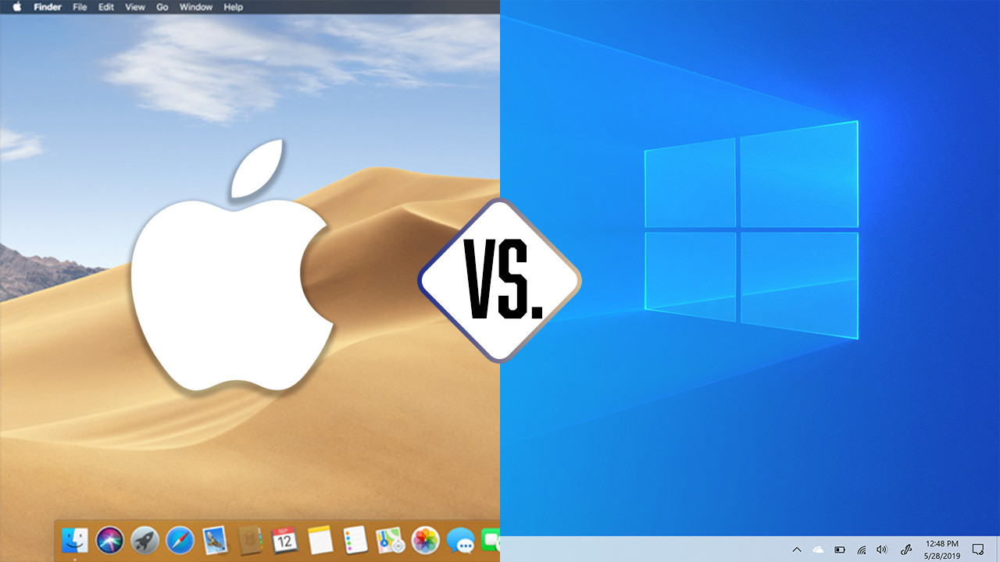

Operativsystemer
Mac
Ikke alle tænker over, at 'Mac' er en forkortelse af 'Macintosh'. Operativsystemet har en historie, der begynder i 1984, hvor den personlige computer (PC) ikke var alles eje.
I dag er sagen en anden: De fleste mennesker kan i 2022 forventes at have mindst én computer. For nogle er det en mobiltelefon, for andre en laptop og for andre igen en stationær. Og langt de fleste danskere har også mere end én computer i deres hjem.
I skrivende stund bruger de nyeste Mac-computere styresystemet macOS, der er et UNIX-operativsystem. Seneste version er macOS 12.5 fra d. 20. juli 2022. Mest spændende er nok det skifte, Apple, der står bag Mac, i 2020 begyndte på, da de præsenterede Apple M1-processoren, hvor de før brugte Intel Core-processorer. M1-chippen skulle være revolutionær.

Windows
Fra Microsoft har vi styresystemet Windows. Det er udbredt til en lang række mærker indenfor PC-markedet. Windows vs. Mac kan godt opleves som lidt af en (smags-)religion, men det er først og fremmest to forskellige systemer, som hver især kræver tilpas meget at blive effektiv i at bruge. Windows 11 er nyeste skud på stammen.
En computer med Windows er ofte billigere end én med macOS, men du kan roligt regne med, at de fleste vil foretrække enten det ene eller andet og ikke altid overveje prisen på systemet, de bliver en del af.
Der er klart flere computere, der kører på Windows i forhold til macOS. Du kan se lidt forskellig statistik på styresystemer hos f.eks. W3Schools under deres Browser Stats > Browsers OS: w3schools.com/browsers/browsers_os.asp
Tablets og mobiler
Hvis du har en tablet eller en mobiltelefon, så har den også et styresystem. En smartphone i dag har typisk enten iOS (Apple) eller Android (mange forskellige mærker). For år tilbage kunne man også se mobiler med Windows Mobile. Men de er i dag en sjældenhed, selvom mange fandt tilgængeligheden for svagsynede bedst hos Windows.
Nogle tech-nørder afsværger Android og iOS og installerer i stedet f.eks. Linux på deres telefon. Det kan f.eks. være Ubuntu Touch. Apple har også lavet et tablet-dedikeret operativsystem, de kalder iPadOS.